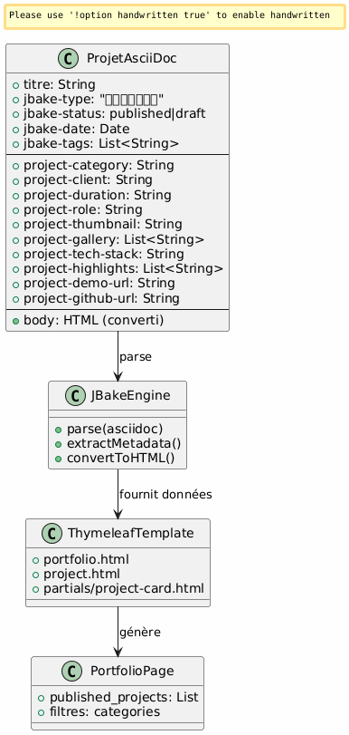
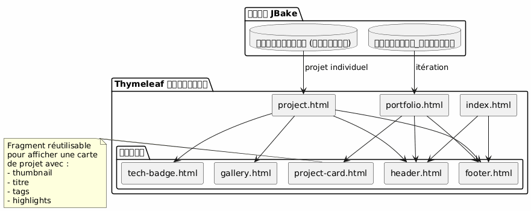
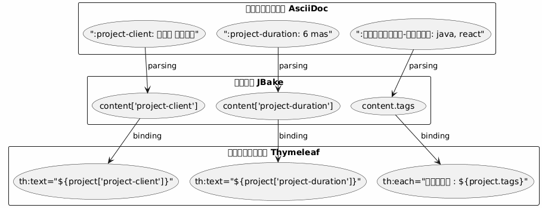
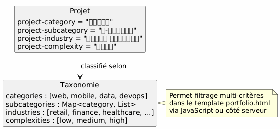

আর্কিটেকচার পোর্টফোলিও JBake - দৃষ্টিভঙ্গি এবং ব্যবহারের ক্ষেত্র
Publié le 15 January 2026
আর্কিটেকচারাল ভিশন
নির্দেশক নীতি
মহাখ্যাপনি উদ্বেগের বিভাজন নীটির ভিত্তিতে তৈরি :
-
Contenu : সমৃদ্ধ মেটাডেটা সহ গঠিত AsciiDoc ফাইল
-
প্রস্তুতি : টেমপ্লেট Thymeleaf পুন:ব্যবহারযোগ্য
-
ডেটা : JBake द्वारा AsciiDoc অ্যাট্রিবিউট থেকে স্বয়ংক্রিয়ভাবে মডেলটি নিষ্কাশিত হয়।
-
Style : Bootstrap 5 দৃশ্যমূলক সমন্বয়ের জন্য
রণনৈতিক পছন্দ : পোর্টফোলিও জন্য AsciiDoc
| মানক | লাভ |
|---|---|
সঙ্গতি |
ব্লগ পোস্টের মতো একই ফরম্যাট |
মেটাডেটা |
সংগঠিত এবং প্রসারণযোগ্য বৈশিষ্ট্য ( |
বজায় রাখার যোগ্যতা |
সহজ টেক্সট সম্পাদনা, Git-এ সংস্করণযোগ্য |
লবচতা |
সমৃদ্ধ সামগ্রী ধারণ করতে পারে (টেবিল, কোড, ছবি) |
টেম্প্লেটিং |
JBake স্বয়ংক্রিয়ভাবে Thymeleaf-এর জন্য বৈশিষ্ট্যাগুলি বের করে |
তথ্য মডেল
প্রতিটি পোর্টফোলিও প্রকল্প একটি AsciiDoc ডকুমেন্ট :
-
শিরোনামের মেটাডেটা : গঠিত তথ্য (গ্রাহক, সময়াবধি, প্রযুক্তি, এত্যাদি)
-
দকুমেন্টের শরীর : কাহিনীমূলক বর্ণনা, চ্যালেঞ্জ, সমাধান, ফলাফল
-
কাস্টম atribুট : প্রিফিক্সড`project-*`স্বয়ংক্রিয় এক্সট্র্যাকশনের জন্য

বিস্তারিত ব্যবহারের ক্ষেত্র
UC1 : পোর্টফোলিয়োর মধ্যে একটি আইটেম যোগ করুন
নমিনাল প্রবাহ
Failed to generate image: PlantUML preprocessing failed: [From <input> (line 7) ] @startuml skinparam backgroundColor #FEFEFE actor Développeur as dev participant "সম্পাদক\nপাঠ্য" as editor participant "ফাইল\nAsciiDoc" as file participant "JBake\nEngine" as jbake participant "সাইট ^^^^^ Syntax Error? (Assumed diagram type: sequence) @startuml skinparam backgroundColor #FEFEFE actor Développeur as dev participant "সম্পাদক\nপাঠ্য" as editor participant "ফাইল\nAsciiDoc" as file participant "JBake\nEngine" as jbake participant "সাইট সট্যাটিক" as site dev -> editor : Créer nouveau fichier activate editor editor -> file : portfolio/nouveau-projet.adoc activate file dev -> editor : Rédiger en-tête avec métadonnées\n(titre, type=project, status=published,\nattributs project-*) dev -> editor : Rédiger contenu narratif\n(contexte, défis, solutions) dev -> editor : Ajouter images dans assets/img/portfolio/ editor -> file : Sauvegarder deactivate editor dev -> jbake : Lancer build (jbake -b) activate jbake jbake -> file : Lire et parser jbake -> jbake : Extraire métadonnées jbake -> jbake : Convertir AsciiDoc → HTML jbake -> jbake : Appliquer template project.html jbake -> jbake : Ajouter à la liste portfolio.html jbake -> site : Générer pages statiques deactivate jbake dev -> site : Vérifier résultat activate site site --> dev : Afficher projet deactivate site @enduml
তैयার করতে যাওয়া ফাইলের টেমপ্লেট
ডেভেলপার তৈরি করে`content/portfolio/nom-projet.adoc`একটি মানককৃত গঠন :
-
শিরোনাম সমস্ত প্রয়োজনীয় বৈশিষ্ট্য সহ
-
মানকীভুক্ত বিভাগ (প্রেক্ষাপট, চ্যালেঞ্জ, সমাধান, ফলাফল)
-
ছবির সামঞ্জস্যপূর্ণ নামকরণ
যাচাই পয়েন্ট
-
প্রয়োজনীয় বৈশিষ্ট্য উপস্থিত আছে (
jbake-type,jbake-status,project-thumbnail) -
সূচিত ছবিগুলো [_] মধ্যে বিদ্যমান`assets/img/portfolio/`
-
JBake বিল্ড ত্রুটি ছাড়া সফল হয়
-
প্রকল্পটি পোর্টফোলিও পৃষ্ঠায় দেখা যায়
-
প্রকল্পের স্বতন্ত্র পৃষ্ঠা সঠিকভাবে প্রদর্শিত হচ্ছে
UC2 : পোর্টফোলিও থেকে একটি আইটেম মুছুন
নামিনাল প্রবাহ
Failed to generate image: PlantUML preprocessing failed: [From <input> (line 4) ] @startuml skinparam backgroundColor #FEFEFE actor Développeur as dev participant "সিস্টেম ^^^^^ Syntax Error? (Assumed diagram type: sequence) @startuml skinparam backgroundColor #FEFEFE actor Développeur as dev participant "সিস্টেম ফাইল" as fs participant "JBake\nইঞ্জিন" as jbake participant "সাইট স্থির" as site database "ক্যাশ\nJBake" as cache dev -> fs : Supprimer portfolio/projet-ancien.adoc activate fs fs --> dev : Fichier supprimé deactivate fs dev -> fs : (Optionnel) Supprimer images associées\nassets/img/portfolio/projet-ancien-* activate fs fs --> dev : Images supprimées deactivate fs dev -> cache : Nettoyer cache JBake activate cache cache --> dev : Cache vidé deactivate cache dev -> jbake : Rebuild complet (jbake -b) activate jbake jbake -> jbake : Scanner content/portfolio/ jbake -> jbake : Projet absent → non généré jbake -> jbake : Régénérer portfolio.html\n(sans le projet supprimé) jbake -> site : Déployer nouveau build deactivate jbake dev -> site : Vérifier activate site site --> dev : Projet absent de la liste deactivate site @enduml
বিকল্পিক কৌশল : সংরক্ষণ
শুধুমাত্র মুছে ফেলার পরিবর্তে, একটি ফোল্ডার তৈরি করা সম্ভব।content/portfolio/archive/:
-
ফাইলটি মুছে ফেলার বদলে স্থানান্তর করুন
-
সহজে পুনরুদ্ধার করা যায়
-
গিটের ইতিহাস আরও পরিষ্কার রাখুন
উপকরণ পরিষ্কারন
-
অশ্রেয় ছবি যাচাই করুন`assets/img/portfolio/`
-
অন্য প্রকল্প দ্বারা উল্লেখ করা না থাকা চিত্রগুলো মুছুন
-
JBake ক্যাশ পরিষ্কার করুন ফ্যান্টম রেফারেন্স এড়াতে
UC3 : অপ্রকাশিত (ড্র্যাফট) হিসাবে রাখুন
মানক ফ্ল্যাক্স
Failed to generate image: PlantUML preprocessing failed: [From <input> (line 5) ] @startuml skinparam backgroundColor #FEFEFE actor Développeur as dev participant "ফাইল\nAsciiDoc" as file participant "JBake ^^^^^ Syntax Error? (Assumed diagram type: sequence) @startuml skinparam backgroundColor #FEFEFE actor Développeur as dev participant "ফাইল\nAsciiDoc" as file participant "JBake ইঞ্জিন" as jbake participant "সাইট স্ট্যাটিক" as site dev -> file : Ouvrir portfolio/projet.adoc activate file dev -> file : Modifier attribut\n:jbake-status: published\n↓\n:jbake-status: draft file --> dev : Sauvegardé deactivate file dev -> jbake : Rebuild (jbake -b) activate jbake jbake -> file : Parser le fichier jbake -> jbake : Détecter status=draft jbake -> jbake : Exclure de published_projects jbake -> jbake : Ne pas créer page publique note right Le projet existe toujours mais n'est pas publié end note jbake -> site : Générer site (sans ce projet) deactivate jbake dev -> site : Vérifier portfolio activate site site --> dev : Projet absent de la liste publique deactivate site @enduml
সম্ভাব্য অবস্থা

প্রয়োগের সাধারণ ক্ষেত্র
-
ড্রাফট প্রকল্প : ড্রাফট তৈরি, প্রকাশ করো যখন prepared
-
অস্থায়ীভাবে গোপনীয় প্রজেক্ট : ড্রাফটে রাখা ক্লায়েন্ট সম্মতির মেয়াদে
-
বড় আপডেট : ড্র্যাফটে যাওয়া, সম্পাদনা করা, পুনঃপ্রকাশ করা
-
A/B testing : ড্রাফটে ডুপ্লিকেট করা, পরীক্ষা করা, শ্রেষ্ঠ সংস্করণটি প্রকাশ করা
টেমপ্লেটিং আর্কিটেকচার
পুনরায় ব্যবহারযোগ্য টেমপ্লেট কৌশল

ডেটা এক্সট্র্যাকশন প্যাটার্ন
JBake স্বয়ংক্রিয়ভাবে AsciiDoc বৈশিষ্ট্য গুলোকে Thymeleaf-এ অ্যাক্সেসযোগ্য বৈশিষ্ট্য-এ রূপান্তর করে:

নামকরণের নিয়মাবলী
-
প্রকল্পের বৈশিষ্ট্য : উপসর্গ`project-*` (ex:
project-client,project-tech-stack) -
ফাইল : kebab-case (ex:`ecommerce-platform.adoc`)
-
ছবি : প্রিফিক্স প্রকল্পের নাম (উদাহরণ:`ecommerce-platform-thumb.jpg`)
-
টেমপ্লেট : ফাংশনাল নাম (উদাহরণ:`project-card.html`,
tech-badge.html)
প্রকাশনের ওয়ার্কফ্লো
উন্নয়ন পাইপলাইন
পরিবেশ
| পরিবেশ | ব্যবহার | স্বीकৃত স্ট্যাটাস |
|---|---|---|
স্থানীয় |
ডেভেলপমেন্ট এবং প্রিভিউ |
প্রলিপি, প্রকাশিত |
মঞ্চন |
প্রি‑উৎপাদন যাচাই |
শুধুমাত্র প্রকাশিত |
উৎপাদন |
জনসাধারণের সাইট |
শুধু প্রকাশিত |
প্রসারযোগ্যতা
নতুন বৈশিষ্ট্যের যোগ
ডেটা মডেলকে সমৃদ্ধ করতে, শুধুমাত্র নতুন প্রিফিক্সযুক্ত বৈশিষ্ট্য যোগ করুন।project-* :
-
`project-awards’: পুরস্কার ও স্বীকৃতি'
-
project-testimonial: গ্রাহক উদ্ধৃতি -
`project-team-size`টিমের আকার
-
project-budget-range: বাজেট রেঞ্জ
এই বৈশিষ্ট্যগুলি স্বয়ংক্রিয়ভাবে টেমপ্লেটে উপলব্ধ হয়, JBake ইঞ্জিনে কোনো পরিবর্তন ছাড়া।
উন্নত শ্রেণীবিন্যাস

ভালো অনুশীলন
ফাইল সংগঠন
-
একটি ফাইল = একটি প্রকল্প : একাধিক প্রকল্প মিশ্রণ এড়াতে
-
বিশেষ ফোল্ডারের ছবি :`assets/img/portfolio/nom-projet/`
-
নomenclature সমন্বিত: অনুসন্ধান ও রক্ষণাবেক্ষণ সহজ করে
-
Versioning Git : পরিবর্তন들의 সম্পূর্ণ ট্র্যাকিং
বিষয়বস্তু পরিচালনা
-
ড্রাফট ডিফল্ট স্ট্যাটাস : শুধুমাত্র তখন প্রকাশ কর যখন প্রস্তুত
-
প্রকাশ-পূর্ব সমীক্ষা: গুণমান এবং গোপনীয়তা যাচাই
-
সম্পূর্ণ মেটাডেটা : সব প্রাসঙ্গিক ক্ষেত্র পূর্ণ করুন
-
ধনী নারেটিভ কনটেন্ট : মেটাডেটায় শুধু আটকে থাকবেন না
কর্মক্ষমতা
-
ছবি অপ্টিমাইজেশন: প্রি-কমিট কম্প্রেশন
-
প্যাগিনেশন যদি প্রয়োজন হয় : যদি ২০টির বেশি প্রকল্প
-
Lazy loading : চাহিদা অনুযায়ী লোড করা গ্যালেরি ছবিগুলো
-
ব্রাউজার ক্যাশ : উপযুক্ত হেডারস এসেটসের জন্য
উপসংহার
এই আর্কিটেকচারটি অনুমতি দেয়:
-
সহজ ব্যবহার : একটি প্রকল্প যোগ করুন = একটি টেক্সট ফাইল তৈরি করুন
-
ফ্লেক্সিবিলিটি : নতুন বৈশিষ্ট্য দিয়ে প্রসারনযোগ্য
-
বক্ষণযোগ্যতা : বিষয়বস্তু/প্রস্তুতি বিভাজন
-
অনুসন্ধানযোগ্যতা : সম্পূর্ণ Git versioning
-
অটোমেশন : বিল্ড ও ধ্রুবিক বিন্যাস সম্ভব
AsciiDoc নির্বাচন করে সাইটের বাকি অংশের সাথে সামঞ্জস্য বজায় রাখে এবং এছাড়া একটি পেশাদার পোর্টফোলিওর জন্য প্রয়োজনীয় মেটাডেটার সমৃদ্ধি প্রদান করে।